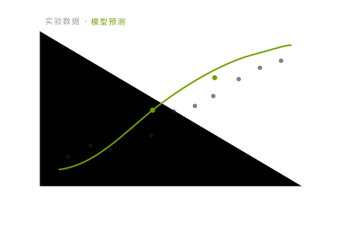
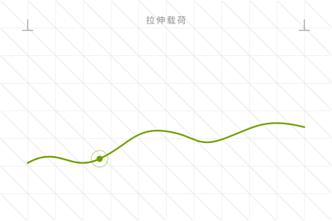
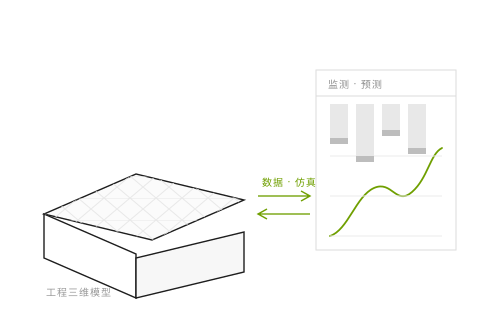
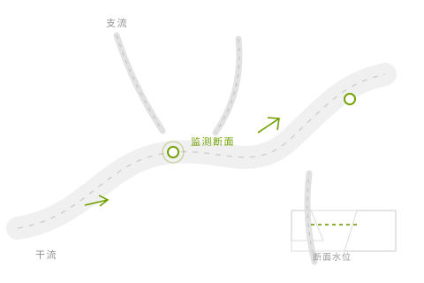
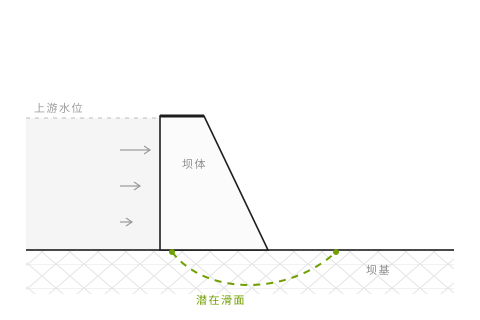
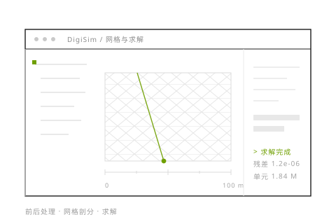

研究方向
课题组的研究沿着一条主线展开：把复杂工程材料与结构的力学行为，用可计算、可验证的模型描述出来。 方法上以多场多尺度数值方法为骨架，用人工智能加速与增强，最终以软件和平台的形式交付给工程使用。
AI 驱动的物理模拟与模型生成
把人工智能放进计算力学的循环里：一方面用生成模型从图像、点云与地质资料直接重建三维几何与材料分布， 另一方面用神经网络代理求解器，在保证物理一致性的前提下把单次分析从小时级压缩到分钟、秒级； 再结合数据同化与反演，让现场监测反过来修正模型。
- 基于深度学习的网格自动剖分与模型重建
- 物理约束的代理模型与算子学习
- 监测数据驱动的参数反演与预测

多场多尺度数值方法
岩体、混凝土与土石混合体都是非均质材料。我们从数字图像与地质统计出发重建骨料、颗粒与节理的真实空间结构， 建立细观模型；再通过均匀化与多尺度耦合，把细观尺度的损伤演化传递到工程尺度， 处理渗流、应力、温度与化学作用下的多场耦合问题。
- 非凸颗粒土石混合体的三维细观建模
- 柱状节理岩体的各向异性与卸荷流变
- 水力劈裂与渗流—应力耦合分析

工程智能化与数字孪生
面向高坝、地下厂房与高边坡，把仿真模型与现场监测、施工进度打通，形成可随施工推进而更新的"活模型"： 用智能反演识别难以直接测量的地质参数，用快速预测回答"下一步会怎样"， 让数值分析真正进入工程决策的日常流程。
- 地下厂房开挖的智能反演
- 施工期监测数据同化与快速预测
- 高边坡与洞室的在线预警

城市水力学与河湖治理
把水动力、排水管网与水质模型耦合起来，评估城市内涝风险、调度方案与治理措施的效果。 模型不止停留在报告里，还会被做成可运行的系统（见成果页）。
- 管网—河网—地表耦合的水动力模拟
- 内涝风险评估与调度方案比选
- 流域水环境治理的数字化管理

坝基、高边坡及地下工程
课题组参与锦屏一级、两河口、二滩、杨房沟、卡拉、官地等 20 余座高坝的分析与复核， 围绕坝体—坝基整体受力、深层抗滑稳定、边坡变形与地下洞室围岩稳定开展三维数值分析与安全评价， 为设计方案比选与加固措施提供依据。
- 坝体—坝基整体三维数值分析
- 深层抗滑稳定与加固方案比选
- 高边坡与地下洞室的施工期稳定

CAE 核心系统开发
算法只有变成工具才算完成。课题组独立开发开源软件与多个行业系统， 覆盖几何建模、网格剖分、求解与后处理全链条，用 C++、Python、C# 把研究代码做成工程师真正愿意用的软件； 已发布的软件见成果页。
- 自研求解器与前后处理框架
- 网格自动剖分与大规模可视化
- 面向行业的专用分析系统

科研项目
-
2018–2020
国家自然科学基金青年项目（51709089）：柱状节理岩体卸荷破坏时效力学机理试验与数值模拟研究，主持
-
2018–2021
国家重点研发计划第四课题专题二（2018YFC0407004）：库岸边坡与地质环境互馈作用多尺度数值模拟方法，主持
-
2022–2023
水利部水工程建设与安全重点实验室开放研究基金：高水头作用下岩体水力劈裂试验及数值方法研究，主持
-
2021–至今
技术开发项目：基于深度学习和网格自动剖分的地下厂房智能反演与预测技术开发，主持
-
2023–至今
工程科研项目：复杂赋存条件下西南红层软岩隧洞变形特征及控制关键技术研究，主持
-
2022
技术开发项目：店埠河流域水环境治理工程智慧排水管理系统，主持
-
2021–2022
工程科研项目：卡拉水电站大坝应力变形及坝基深层抗滑稳定、消力池整体三维数值计算，主持
-
2018–2020
中国博士后科学基金特别资助（2018T110434）：柱状节理岩体卸荷破坏细观力学机理及多尺度数值模拟，主持